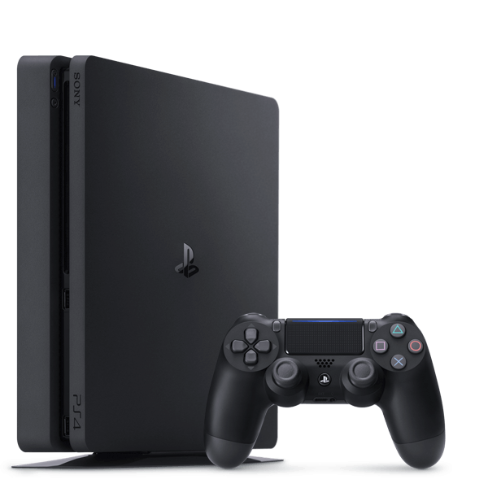
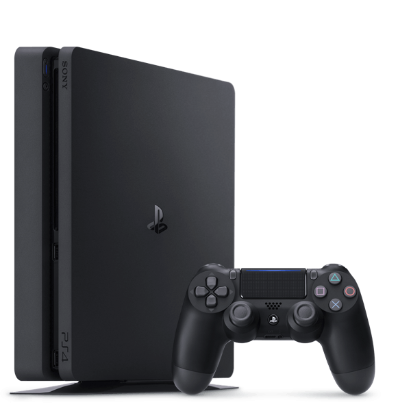

Uz kādām viedierīcēm var spēlēt video spēles?
Video spēles visbiežāk spēlē uz datora (pc), var arī uz portatīvā datora, taču spēles vizuālā kvalitāte un aizkavēšanās (lag) var atšķirties! Tāpat var spēlēt arī uz telefona un planšetes, kur arī tas pats stāsts - spēlei var būt sliktāki grafiki un lielāka bremzēšana. Vēl var spēlēt uz PS4/PS5 platformām ar konsolēm. Spēles var spēlēt arī uz Nintendo switch, taču tam ir speciālas spēles, kuras piemērtotas tikai tam, taču dažas, piemēram, ''Deltarune'' un ''Animal crossing'' ir pieejamas vairākās ierīcēs.
 
